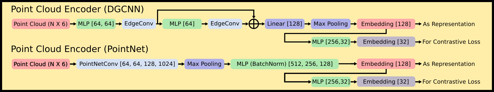

Approach
Instance-Level Mapping
Given RGB, depth, odometry and instance masks of one sequence of exploration data, we build an instance-level map consisting of a list of point clouds where each point cloud represent an object in the scene.
Partial Point Cloud Observation Dataset Generation
We label each back-projected instance mask associated with an object with its object ID in the instance-level map, forming a dataset consisting of samples like (partial observation, object ID).
Train a Per-Scene Point Cloud Encoder with Contrastive Learning
We exploit the scheme of SimCLR to train a point cloud encoder to generate latent embeddings for point cloud. The embeddings of partial observations for the same object should be similar while those of different objects should be far away from one another in the embedding space. We use DGCNN or PointNet as the backbones of the point cloud encoder as is shown below.
Query with Voting using the Object Memory Bank
Given a new sequence of exploration data, we use the frozen encoder to encode the partial observations into embeddings, search k nearest neighbors and collect the neighbors' object IDs, which are used for voting for the associated reference object.
Query with VLM Ensembling
To further improve the results, we propose an ensembling scheme combining the semantic strengths of VLMs and the scene-specific expertise of our BYE encoder. To start with, we first introduce the concept of association matrix and how to use it for object association. As is shown below, the row and column indices of an association matrix indicate the new and reference object IDs, respectively. The value at the (i, j) position of the matrix indicates the similarity between the i-th new object and the j-th reference object. We use the Hungarian Algorithm on the association matrix to assign a reference object ID for each new object ID.
The key of the ensembling method is to derive the association matrices with both the BYE encoder and the VLM respectively, fuse them, and use the fused association matrix to predict association. The fused association matrix can be calculated by element-wise sum of the two association matrices.
The association matrix for BYE encoder can be calculated with the kNN results. The element at the (i, j) in the matrix can be calculated by dividing the count of reference object ID j in the kNN results of new object ID i by the total count of considered nearest neighbors. When we consider only a single frame, the denominator is K. When we take a sequence of observations, the denominator is number of frames times the K. The association matrix for VLM can be calculated by the cosine similarity between the embeddings of new and reference object IDs. The fused association matrix can be calculated by element-wise multiplication of the two association matrices.
The association matrix for VLM can be calculated by the cosine similarity between the embeddings of new and reference object.
Experiment
Object Association in Long-Term Dynamic Environments

We collect exploration trials in 10 scenes (as is shown above), each with one reference trial and a new trial of exploration data. Then we need to find the mapping from the object ID in the new trial to the object ID in the reference trial. We compare our method with heuristic methods based on foundation models that can generate dense visual-language features. The results show that our ensemble method achieves an almost-perfect 95% success rate, with a notable margin over the foundation models. The results are shown in the table below.
We further show the qualitative results of object association in long-term dynamic environments. When we first look at objects that are commonly occurring in various datasets like "Garbage Can", "Bowl", "Stool", "Bed", "Desk", and "Laptop", VLMs like CLIP, OVSeg and LSeg perform well in the association tasks. The major reason behind this might be that the pre-training and fine-tuning processes allow the model to learn reliable and robust features for those categories. When there are no duplicate objects in the scene (like "Bed" and "Desk"), the semantic features are representative for those objects and therefore help with association. However, when we look at less common categories like "Cell Phone", "Credit Card", "Key Chain", and "Pan", fine-tuned foundation models struggle to correctly associate them due to their long-tailed characteristics in the dataset. When we look at small objects such as "Pen", even CLIP fails to associate them correctly. However, the ensembling method integrates the scene-specific expertise with VLM, making these detailed knowledge contribute to the performance. The benefits of BYE emerge under these circumstances since BYE is trained on the reference exploration data, which is not restricted by the data distribution that pre-trained models are accustomed to. BYE only focuses on the geometric and visual characteristics of the objects in the scenes and learns to differentiate them in the process of contrastive learning.

Real World Results


We further evaluate our method on real-world data collected in a dynamic environment. As is shown above, the left sequence is reference sequence and the right one is the new observation after object relocations happened.
The quantitative results show the robustness and effectiveness of our ensembling method with a 100% success rate in object association tasks.

In the tabletop scene, objects are moved around randomly and the robot needs to associate them across different trials. Both our method and CLIP works perfectly in this scenario.

In the furniture scene, we randomly put eight chairs across three different rooms (Furn 1, Furn 2, Furn 4) and test the association methods. This scenario is challenging since it requires the model to perform association for the semantically similar objects. Some chairs are identical except for different objects placed on them, which poses a challenge for VLMs which usually struggle with differentiating small differences among the same type of objects. In this case, our method still robustly achieve a 100% association success rate, while other VLMs face different degrees of failures.
Runtime Analysis
BYE can run efficiently on a RTX 3060 Ti GPU with frequency of 88 samples per second when a batch size of 32 is used, making the method compatible and affordable with real-time applications.